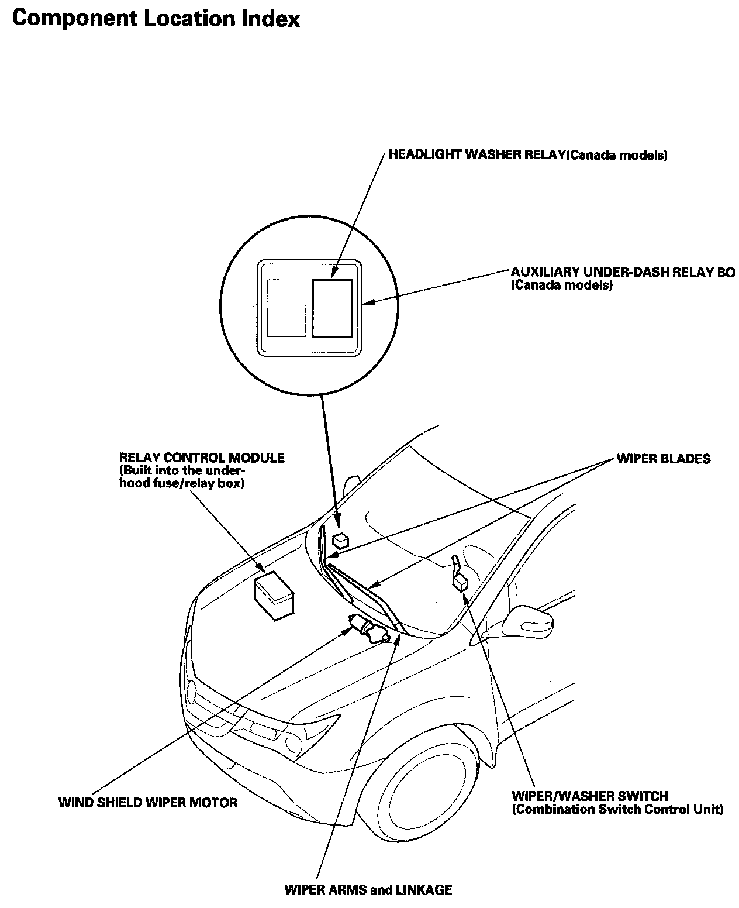

Operation CHARM
: Car repair manuals for everyone.
Home
>>
Acura
>>
2007
>>
MDX V6-3.7L
>>
Repair and Diagnosis
>>
Cruise Control
>>
Relays and Modules - Cruise Control
>>
Cruise Control Relay
>>
Locations
Cruise Control Relay: Locations
Relay And Control Unit Locations Dashboard:
Wipers/Washers Component Location Index:
